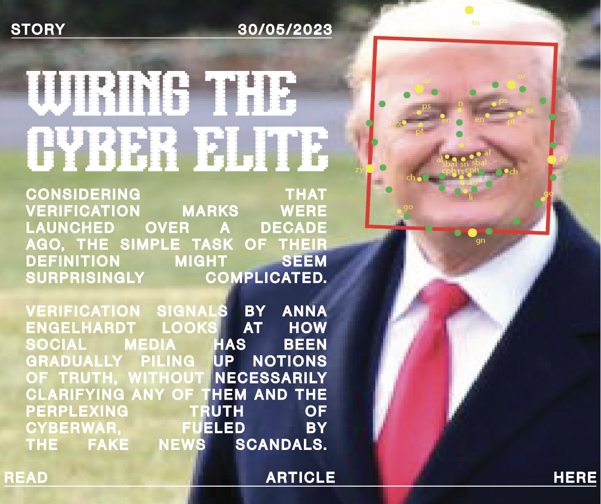

CIRCUITS OF TRUTH IS A MAGAZINE THAT LOOKS AT THE SATURATED CYBER-SPACE OF POST-TRUTH POLITICS AND ATTEMPS TO REVERSE ENGINEER THE MECHANISMS OF TRUTH PRODUCTION. READ ALONG TO SEE HOW SOCIAL MEDIA PLATFORMS USE VERIFICATION MARKS AND ENGAGEMENT RATES TO DETERMINE WHAT IS CONSIDERED “TRUE”.
VERIFICATION SIGNALS
CONSIDERING THAT VERIFICATION MARKS WERE LAUNCHED OVER A DECADE AGO, THE SIMPLE TASK OF THEIR DEFINITION MIGHT SEEM SURPRISINGLY COMPLICATED. VERIFICATION SIGNALS BY ANNA ENGELHARDT LOOKS AT HOW SOCIAL MEDIA HAS BEEN GRADUALLY PILING UP NOTIONS OF TRUTH, WITHOUT NECESSARILY CLARIFYING ANY OF THEM AND THE PERPLEXING TRUTH OF CYBERWAR, FUELED BY THE FAKE NEWS SCANDALS.


REPUTATION OFFENSE AND DEFENCE
CONSIDERING THAT VERIFICATION MARKS WERE LAUNCHED OVER A DECADE AGO, THE SIMPLE TASK OF THEIR DEFINITION MIGHT SEEM SURPRISINGLY COMPLICATED. VERIFICATION SIGNALS BY ANNA ENGELHARDT LOOKS AT HOW SOCIAL MEDIA HAS BEEN GRADUALLY PILING UP NOTIONS OF TRUTH, WITHOUT NECESSARILY CLARIFYING ANY OF THEM AND THE PERPLEXING TRUTH OF CYBERWAR, FUELED BY THE FAKE NEWS SCANDALS.